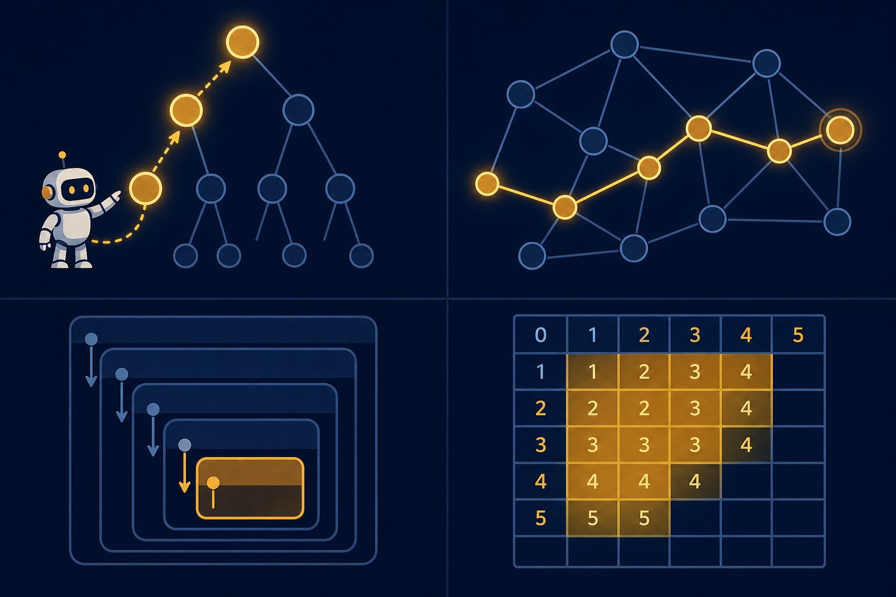

DSA II — recursion, trees, graphs, DP
Arrays were the alphabet; this is the literature. Recursion, trees, graphs, and dynamic programming power everything from file systems to knowledge graphs to interview hard rounds. Same deal: patterns first, runnable Python always.

Figure 68.1 — One idea, four costumes: break it down (recursion), walk it (trees/graphs), remember it (DP).
1. Recursion + trees (think in base cases)
Every recursive solution needs a base case (when to stop) and a shrink step (smaller input). Naive Fibonacci is the cautionary tale — exponential — and memoisation is the one-line rescue:
from functools import lru_cache
@lru_cache(maxsize=None) # remember solved subproblems: O(2^n) -> O(n)
def fib(n):
if n < 2: # base case
return n
return fib(n - 1) + fib(n - 2) # shrink step2. Graphs — BFS vs DFS (pick by question)
| Question shape | Algorithm | Data structure |
|---|---|---|
| Shortest path (unweighted) | BFS | Queue (deque) |
| Exists a path? / connected? | DFS or BFS | Stack / recursion + visited set |
| Shortest path (weighted) | Dijkstra | Heap (heapq) |
| Order with dependencies | Topological sort | Queue + indegree map |
from collections import deque
def bfs_shortest(graph, start, goal):
q = deque([(start, 0)])
seen = {start}
while q:
node, d = q.popleft()
if node == goal:
return d
for nb in graph[node]:
if nb not in seen:
seen.add(nb)
q.append((nb, d + 1))
return -1 # unreachable3. Dynamic programming (recursion that remembers)
- Spot it: “count / min / max over choices” + overlapping subproblems (same state solved twice) = DP.
- Top-down: write recursion +
lru_cache(like fib above) — fastest to correct in interviews. - Bottom-up: fill a table iteratively; often compresses to O(1) space. Same answer, no recursion limit:
def coin_change(coins, amount):
INF = amount + 1
dp = [0] + [INF] * amount
for a in range(1, amount + 1):
dp[a] = 1 + min((dp[a - c] for c in coins if c <= a), default=INF)
return dp[amount] if dp[amount] != INF else -1Recursion limits & graphs gotchas
Python’s default recursion limit (~1000) kills deep DFS — raise it with sys.setrecursionlimit or go iterative. Always keep a visited set in graph walks (cycles → infinite loops). Dijkstra fails on negative edges (use Bellman-Ford, rarely asked). And heaps: Python’s heapq is min-only — push (-priority, item) for max-heaps.
Short notes
Recursion = base case + shrink step; memoise with lru_cache. Trees: BST O(log n) avg, inorder = sorted. Graphs: BFS shortest (queue), DFS connectivity (stack/visited), Dijkstra weighted (heap), topo-sort dependencies. DP: overlapping subproblems → top-down cache or bottom-up table. Watch recursion limits and cycles.
Point notes
- Base case + shrink.
- lru_cache rescues fib.
- BFS = shortest, queue.
- Visited set, always.
- DP = remember subproblems.
MCQs
5 questions1. Inorder traversal of a binary SEARCH tree yields keys in:
2. Shortest path in an UNWEIGHTED graph is found with:
3. @lru_cache on naive Fibonacci changes complexity from:
4. Forgetting the visited set in graph DFS risks:
5. Course prerequisites (“take A before B”) need:
Practice questions
P1. “Number of islands” (grid of 0/1, count connected 1-groups). Give approach + complexity.
Scan every cell; on an unvisited 1, DFS/BFS-flood the whole island (mark visited) and count++. Each cell visited once → O(rows×cols) time, O(1) extra if you mutate the grid (else visited set). Mention 4-direction vs 8-direction, and iterative stack to dodge recursion limits on huge grids.
P2. Convert top-down fib-with-cache to bottom-up O(1) space. Why might an interviewer ask for it?
a, b = 0, 1; repeat n times: a, b = b, a+b. Only two values live at once → O(1) space, O(n) time, no recursion limit. Interviewers ask to test whether you see that the full table/cache is unnecessary — state compression. Same trick powers space-optimised DP (knapsack 1D, edit-distance two rows).
P3. Dijkstra on a graph with one negative edge: what breaks, and what do you use instead?
Dijkstra greedily finalises the smallest tentative distance — a later negative edge can undercut a “finalised” node, so distances come out wrong. Use Bellman-Ford (O(VE), handles negatives, detects negative cycles) for small graphs, or reweight (Johnson’s) for repeated queries. In interviews: just name the failure and the swap.